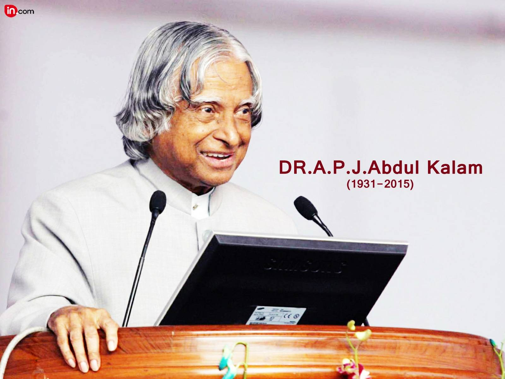

DR APJ ABDUL KALAM
The man who loved innovation

"If you fail, never give up because FAIL means "First Attempt In Learning". "Failure will never overtake me if my determination to succeed is strong enough." "All of us do not have equal talent. But , all of us have an equal opportunity to develop our talents."
- A.P.J. Abdul Kalam, in full Avul Pakir Jainulabdeen Abdul Kalam, (born October 15, 1931, Rameswaram, India—died July 27, 2015, Shillong), Indian scientist and politician who played a leading role in the development of India’s missile and nuclear weapons programs. He was president of India from 2002 to 2007
- Kalam earned a degree in aeronautical engineering from the Madras Institute of Technology and in 1958 joined the Defence Research and Development Organisation (DRDO). In 1969 he moved to the Indian Space Research Organisation, where he was project director of the SLV-III, the first satellite launch vehicle that was both designed and produced in India. Rejoining DRDO in 1982, Kalam planned the program that produced a number of successful missiles, which helped earn him the nickname “Missile Man.” Among those successes was Agni, India’s first intermediate-range ballistic missile, which incorporated aspects of the SLV-III and was launched in 1989.
- From 1992 to 1997 Kalam was scientific adviser to the defense minister, and he later served as principal scientific adviser (1999–2001) to the government with the rank of cabinet minister. His prominent role in the country’s 1998 nuclear weapons tests solidified India as a nuclear power and established Kalam as a national hero, although the tests caused great concern in the international community. In 1998 Kalam put forward a countrywide plan called Technology Vision 2020, which he described as a road map for transforming India from a less-developed to a developed society in 20 years. The plan called for, among other measures, increasing agricultural productivity, emphasizing technology as a vehicle for economic growth, and widening access to health care and education.
- In 2002 India’s ruling National Democratic Alliance (NDA) put forward Kalam to succeed outgoing President Kocheril Raman Narayanan. Kalam was nominated by the Hindu nationalist (Hindutva) NDA even though he was Muslim, and his stature and popular appeal were such that even the main opposition party, the Indian National Congress, also proposed his candidacy. Kalam easily won the election and was sworn in as India’s 11th president, a largely ceremonial post, in July 2002. He left office at the end of his term in 2007 and was succeeded by Pratibha Patil, the country’s first woman president.
- Upon returning to civilian life, Kalam remained committed to using science and technology to transform India into a developed country and served as a lecturer at several universities. On July 27, 2015, he collapsed while delivering a lecture at the Indian Institute of Management Shillong and was pronounced dead from cardiac arrest soon afterward.
- Kalam wrote several books, including an autobiography, Wings of Fire (1999). Among his numerous awards were two of the country’s highest honours, the Padma Vibhushan (1990) and the Bharat Ratna (1997).